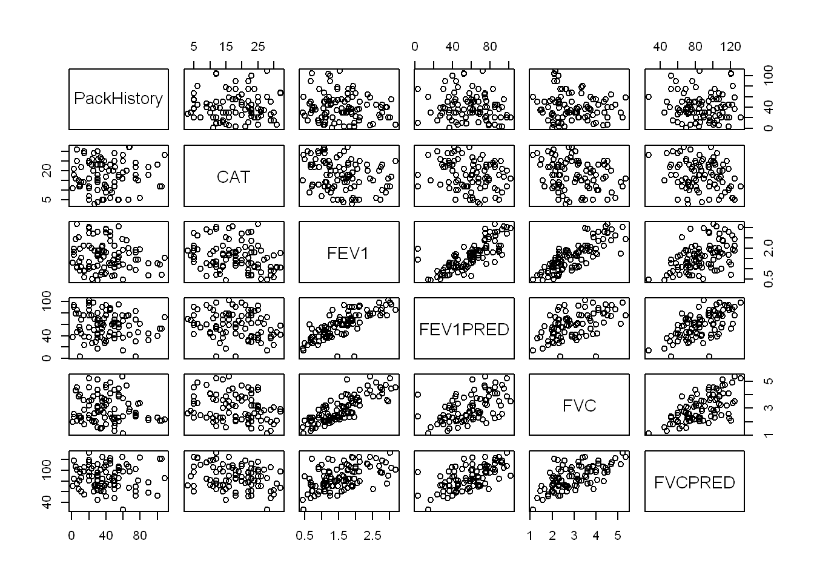
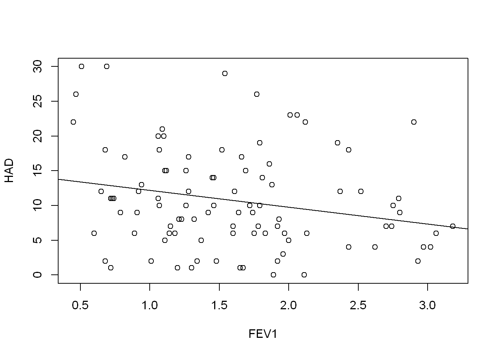
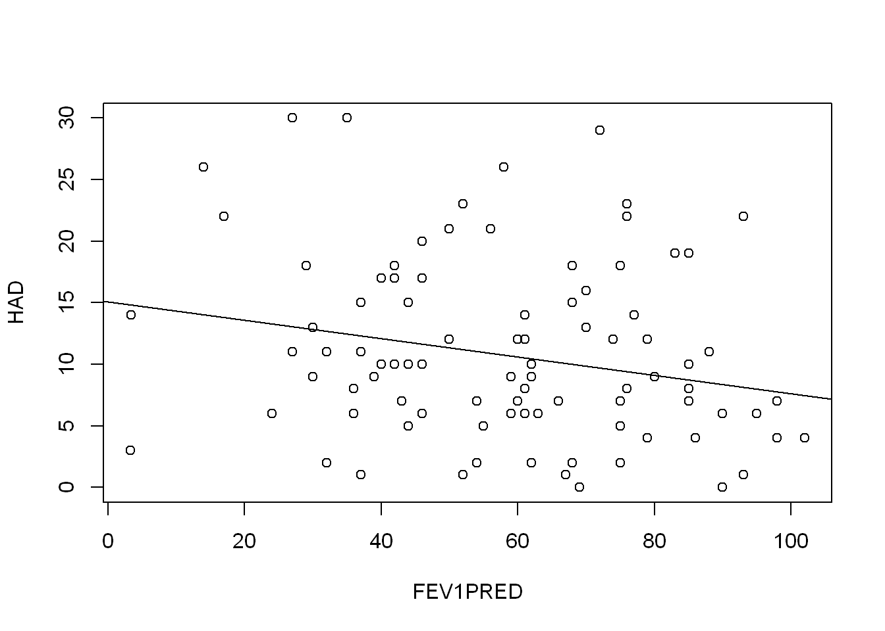
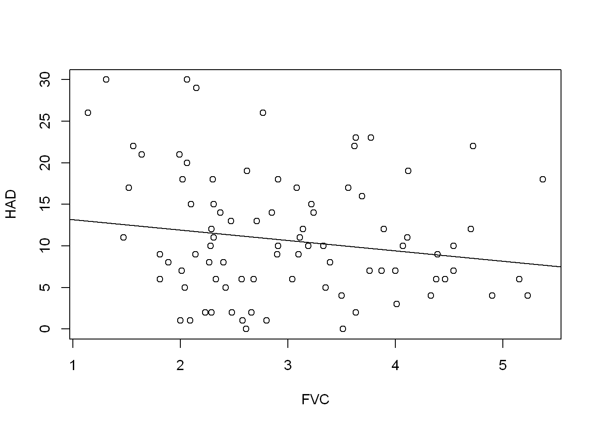
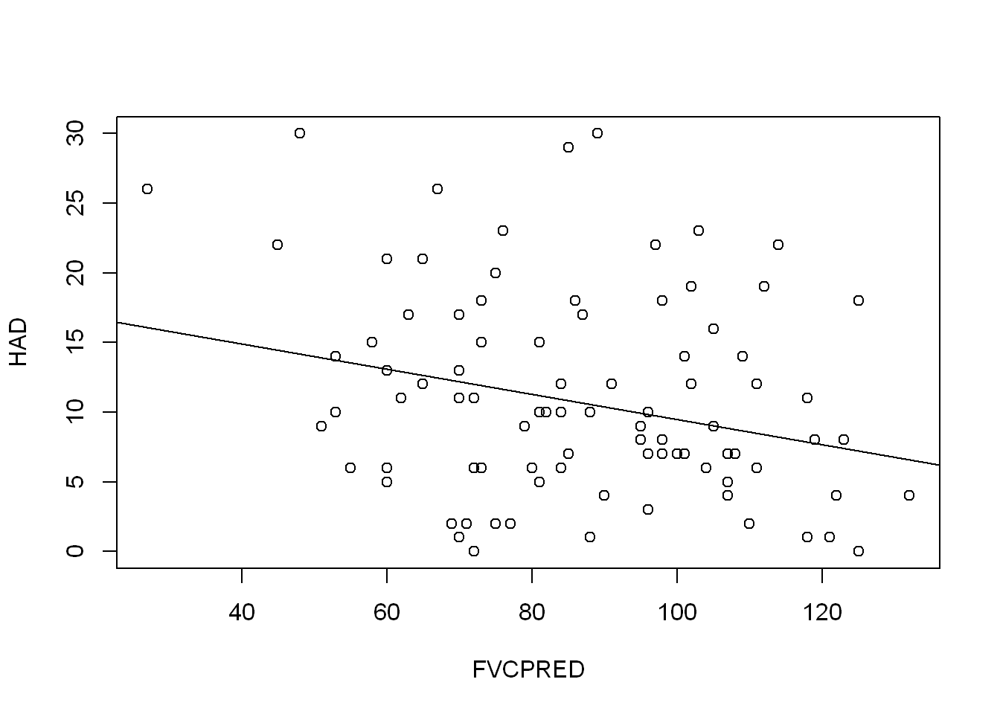

COPD <- read.csv("data/COPD_student_dataset.csv")model-notes
What are the patient characteristics that predict worsening depression/anxiety in COPD patients?
Dataset of 101 Chronic obstructive pulmonary disease COPD patients.
The HAD variable is the score from the Hospital Anxiety and Depression scale.
HADS score ranges from 0 to 21
Choosing predictor variables
Characteristics: Age, Gender, PackHistory, Smoking.
Disease: CAT, COPDSEVERITY.
Lung function: FEV1, FEV1PRED, FVCPRED, FVCPRED1.
Co-morbidities:
Import Dataset
Missing or inaccurate values
Inspecting variables with summary() reveals some unlikely looking ranges.
summary(COPD[["HAD"]]) Min. 1st Qu. Median Mean 3rd Qu. Max.
0.00 6.00 10.00 11.18 15.00 56.20 The HAD score should range from 0 to 21, so there’s a least 1 incorrect value.
sum(COPD[["HAD"]] > 21)[1] 11table(COPD[["HAD"]][COPD[["HAD"]] > 21])
22 23 26 29 30 56.2
3 2 2 1 2 1 In fact there are 11 values over 21. It looks as though the scale for this actually runs from 0 to 30. I’d like to take these questions back to the research team to confirm, but for the sake of this exercise I will just ignore 56.2 as the outlier.
COPD[["HAD"]][COPD[["HAD"]] > 30] <- NA_integer_Similarly, CAT has a clearly separated max value. CAT is the COPD assessment test and according to the CAT user guide is scored on a scale of 0-40.
summary(COPD[["CAT"]]) Min. 1st Qu. Median Mean 3rd Qu. Max.
3.00 12.00 18.00 19.34 24.00 188.00 sum(COPD[["CAT"]] > 40)[1] 1Since there is just the one, I will exclude it.
COPD[["CAT"]][COPD[["CAT"]] > 40] <- NA_integer_Collinearity of predictor candidates
Correlation in continuous variables
continuous_vars <- c("PackHistory", "CAT", "FEV1",
"FEV1PRED", "FVC", "FVCPRED")pairs(COPD[, continuous_vars])
cor(COPD[, continuous_vars]) PackHistory CAT FEV1 FEV1PRED FVC FVCPRED
PackHistory 1.000000000 NA -0.1315051 -0.1313410 -0.09307289 -0.004489788
CAT NA 1 NA NA NA NA
FEV1 -0.131505136 NA 1.0000000 0.7761105 0.82016501 0.515856013
FEV1PRED -0.131340964 NA 0.7761105 1.0000000 0.52152997 0.625877533
FVC -0.093072888 NA 0.8201650 0.5215300 1.00000000 0.622430376
FVCPRED -0.004489788 NA 0.5158560 0.6258775 0.62243038 1.000000000There is strong correlation between the lung function measures FEV1, FEV1PRED, FVC and FVCPRED, so I will seek to include only one of the four, by exploring the individual relationships of each to HAD:
FEV1_model <- lm(HAD ~ FEV1, COPD)
summary(FEV1_model)
Call:
lm(formula = HAD ~ FEV1, data = COPD)
Residuals:
Min 1Q Median 3Q Max
-11.869 -4.710 -1.278 3.932 18.128
Coefficients:
Estimate Std. Error t value Pr(>|t|)
(Intercept) 14.622 1.858 7.871 4.78e-12 ***
FEV1 -2.435 1.072 -2.272 0.0253 *
---
Signif. codes: 0 '***' 0.001 '**' 0.01 '*' 0.05 '.' 0.1 ' ' 1
Residual standard error: 7.188 on 98 degrees of freedom
(1 observation deleted due to missingness)
Multiple R-squared: 0.05004, Adjusted R-squared: 0.04035
F-statistic: 5.162 on 1 and 98 DF, p-value: 0.02527plot(HAD ~ FEV1, COPD)
abline(FEV1_model)
FEV1PRED_model <- lm(HAD ~ FEV1PRED, COPD)
summary(FEV1PRED_model)
Call:
lm(formula = HAD ~ FEV1PRED, data = COPD)
Residuals:
Min 1Q Median 3Q Max
-11.819 -4.662 -1.654 4.731 19.298
Coefficients:
Estimate Std. Error t value Pr(>|t|)
(Intercept) 15.06450 2.02895 7.425 4.19e-11 ***
FEV1PRED -0.07448 0.03260 -2.284 0.0245 *
---
Signif. codes: 0 '***' 0.001 '**' 0.01 '*' 0.05 '.' 0.1 ' ' 1
Residual standard error: 7.186 on 98 degrees of freedom
(1 observation deleted due to missingness)
Multiple R-squared: 0.05056, Adjusted R-squared: 0.04087
F-statistic: 5.218 on 1 and 98 DF, p-value: 0.02451plot(HAD ~ FEV1PRED, COPD)
abline(FEV1PRED_model)
FVC_model <- lm(HAD ~ FVC, COPD)
summary(FVC_model)
Call:
lm(formula = HAD ~ FVC, data = COPD)
Residuals:
Min 1Q Median 3Q Max
-11.161 -5.108 -1.560 4.502 18.147
Coefficients:
Estimate Std. Error t value Pr(>|t|)
(Intercept) 14.4460 2.3162 6.237 1.13e-08 ***
FVC -1.2586 0.7448 -1.690 0.0943 .
---
Signif. codes: 0 '***' 0.001 '**' 0.01 '*' 0.05 '.' 0.1 ' ' 1
Residual standard error: 7.269 on 98 degrees of freedom
(1 observation deleted due to missingness)
Multiple R-squared: 0.02831, Adjusted R-squared: 0.01839
F-statistic: 2.855 on 1 and 98 DF, p-value: 0.09426plot(HAD ~ FVC, COPD)
abline(FVC_model)
FVCPRED_model <- lm(HAD ~ FVCPRED, COPD)
summary(FVCPRED_model)
Call:
lm(formula = HAD ~ FVCPRED, data = COPD)
Residuals:
Min 1Q Median 3Q Max
-12.010 -5.014 -1.193 4.286 19.529
Coefficients:
Estimate Std. Error t value Pr(>|t|)
(Intercept) 18.5253 2.9301 6.322 7.66e-09 ***
FVCPRED -0.0905 0.0330 -2.742 0.00725 **
---
Signif. codes: 0 '***' 0.001 '**' 0.01 '*' 0.05 '.' 0.1 ' ' 1
Residual standard error: 7.107 on 98 degrees of freedom
(1 observation deleted due to missingness)
Multiple R-squared: 0.07127, Adjusted R-squared: 0.06179
F-statistic: 7.52 on 1 and 98 DF, p-value: 0.007254plot(HAD ~ FVCPRED, COPD)
abline(FVCPRED_model)
They all have seem to be a slight negative predictor of HAD, but none of them explain the variation very well. The FVCPRED model has the highest adjusted R squared value at 0.06179.